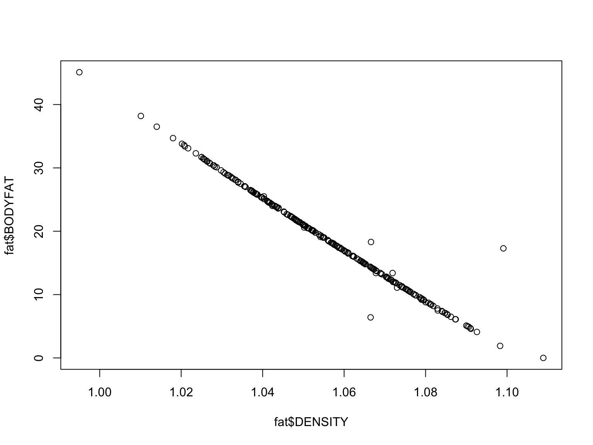
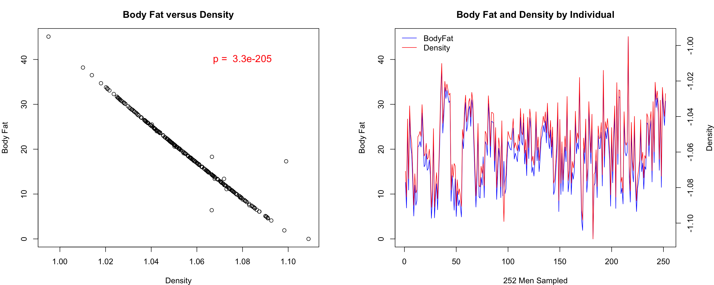
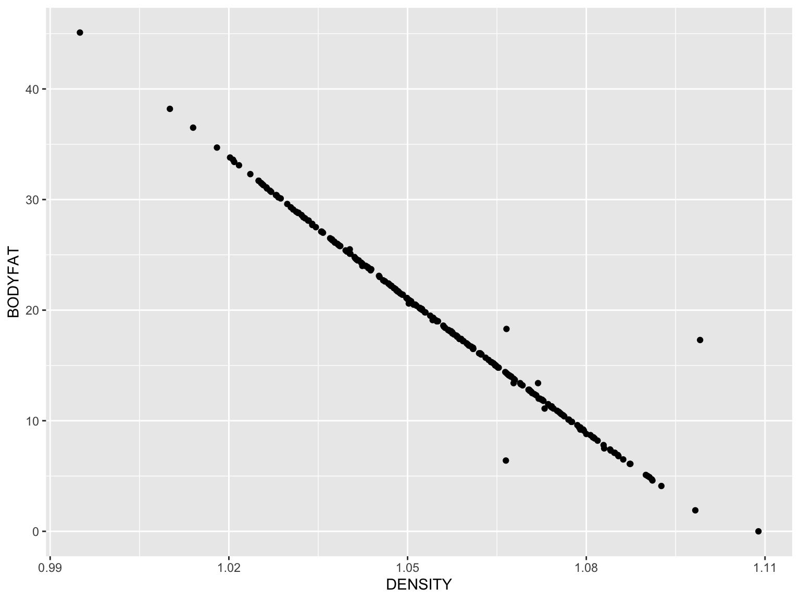
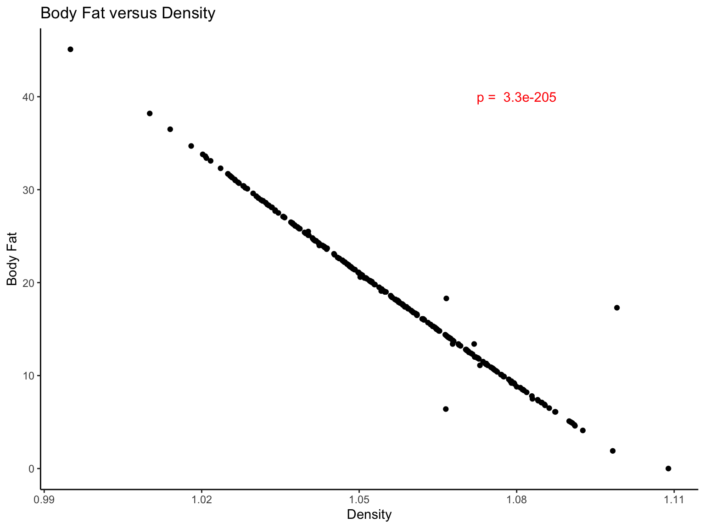
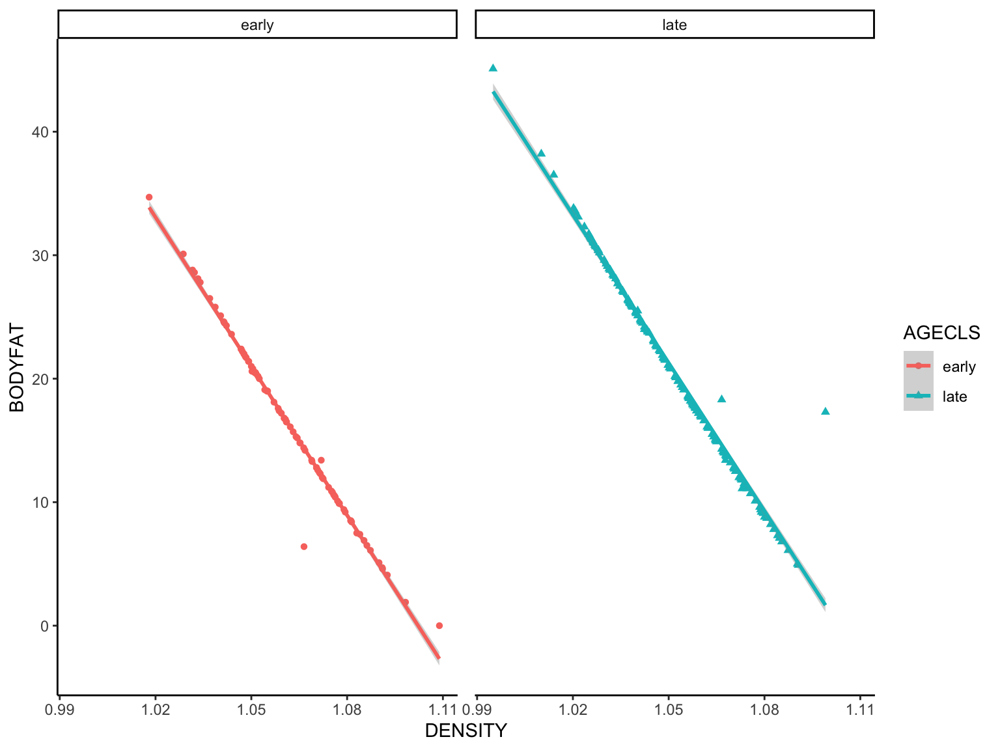

Advanced Graphing in R
Laurie Stevison & Amanda Clark
Getting Started
If you are using this code with the video, note that some slides
have been added post-recording and are not shown.
We will be working with the “BodyFat.csv” dataset again. Make an R
Notebook for this walk-through tutorial to save all the code you will be
learning. We will cover:
- Adding text to plots
- Plotting on multiple Axes
- Adding figure legends
- Making multi-panel plots
- Adjusting figure margins
- Writing images to a file
- Paralleling base R code to
ggplot2 syntax to accomplish
the same goals
You are working within an R project (check in the top right
corner of RStudio - you should see the project name
“R_Mini_Course”).
This means that the project directory will also be set as working
directory. The exception is in a R Notebook, where the working directory
is where the R Notebook is saved.
You should be saving your notebooks in the R Project and using
../.. to point at the main project directory.
Before starting, it may be helpful to have a chunk of code that
does the following:
- clear your workspace
rm(list=ls())
- load your packages
library(<package-name>)
- check your session information
sessionInfo()
- list files in your working directory
list.files(getwd())
Read in dataset
You will need to add path information to the raw_data
directory once you have uncompressed the data tarball.
Now, let’s return to the “BodyFat.csv” dataset by reading in the CSV
file:
#fat=read.csv(file="BodyFat.csv")
You may also read in the previously made object into
fat:
fat <- readRDS(file = "data/BodyFat.rds")
head(fat)
## IDNO BODYFAT DENSITY AGE WEIGHT HEIGHT ADIPOSITY NECK CHEST ABDOMEN HIP THIGH KNEE ANKLE
## 1 1 12.6 1.0708 23 154.25 67.75 23.7 36.2 93.1 85.2 94.5 59.0 37.3 21.9
## 2 2 6.9 1.0853 22 173.25 72.25 23.4 38.5 93.6 83.0 98.7 58.7 37.3 23.4
## 3 3 24.6 1.0414 22 154.00 66.25 24.7 34.0 95.8 87.9 99.2 59.6 38.9 24.0
## 4 4 10.9 1.0751 26 184.75 72.25 24.9 37.4 101.8 86.4 101.2 60.1 37.3 22.8
## 5 5 27.8 1.0340 24 184.25 71.25 25.6 34.4 97.3 100.0 101.9 63.2 42.2 24.0
## 6 6 20.6 1.0502 24 210.25 74.75 26.5 39.0 104.5 94.4 107.8 66.0 42.0 25.6
## BICEPS FOREARM WRIST X
## 1 32.0 27.4 17.1 NA
## 2 30.5 28.9 18.2 NA
## 3 28.8 25.2 16.6 NA
## 4 32.4 29.4 18.2 NA
## 5 32.2 27.7 17.7 NA
## 6 35.7 30.6 18.8 NA
Density is all that matters!
In a previous video, we found several parameters correlated
significantly with bodyfat, but in fact, density explains the majority
of the variance in bodyfat. Once that is accounted for, no other
parameters matter.
So, let’s focus on density:
#plot density and bodyfat
plot(fat$BODYFAT~fat$DENSITY)

These variables show an inverse relationship - as density increases,
bodyfat goes down. What does this mean?
Add statistical results to our plot:
As we discussed in a previous video, it helps give your audience
context if you provide statistical results within a graphic.
#redo the statistical correlation
cor.test(fat$BODYFAT,fat$DENSITY)
##
## Pearson's product-moment correlation
##
## data: fat$BODYFAT and fat$DENSITY
## t = -101.52, df = 250, p-value < 2.2e-16
## alternative hypothesis: true correlation is not equal to 0
## 95 percent confidence interval:
## -0.9906950 -0.9847529
## sample estimates:
## cor
## -0.9880867
#remember we can isolate just the p-value
p=cor.test(fat$BODYFAT,fat$DENSITY)$p.value
#to print it, we can just 'call' p:
p
## [1] 3.280973e-205
#let's round this to look a bit nicer when we add it to our plot
round(p,2)
## [1] 0
#hmm, not quite right, we can use the function `signif` to round scientific notation figures
signif(p,2)
## [1] 3.3e-205
#to add it to our plot, we will use the function `paste` which will append "p = " to the actual value of p.
paste("p = ",signif(p,2))
## [1] "p = 3.3e-205"
Add p-value to a plot
First, let’s improve our plot by adding a descriptive title and label
the X and Y axes:
#re-plot data with labels
plot(fat$BODYFAT~fat$DENSITY,main="Body Fat versus Density", xlab="Density",ylab="Body Fat")
#now, we can use the `text` function to add this to the plot
#note: to put it in the upper left quadrant, I added x and y coordinates. Feel free to move it around and change the color.
text(1.08,40,paste("p = ",signif(p,2)),col="red")

Let’s examine each variable for all the individuals in the
dataset
We can put bodyfat on the left y-axis and density on the right
y-axis.
#plot body fat per individual
plot(fat$IDNO,fat$BODYFAT,col="blue", main="Body Fat",xlab="252 Men Sampled", ylab="Body Fat",type="l")
#add margin text to label the 2nd y-axis
mtext("Density",side=4)
#call a new plot
par(new=T)
#now, intialize an empty plot of density per individual (x-axis needs to be the same to make this work!)
#note we have used type="n" to make an empty plot, disabled the axes and made labels empty
plot(fat$IDNO,fat$DENSITY,type="n",axes=F,ylab="",xlab="")
#now, we plot the second y-axis, axis 4
axis(4)
#add lines to this axis
lines(fat$IDNO,fat$DENSITY,col="red")

This still looks a bit messy - it is hard to see that these two
values correlate at all? What is wrong?
Inverting a plot
Because Density correlates negatively with Body Fat, we will plot the
inverse of this parameter
#first, let's adjust the margin parameters so we can better see the second y-axis
par(mar=c(4,4,3,4))
#replot bodyfat
plot(fat$IDNO,fat$BODYFAT,col="blue", main="Body Fat",xlab="252 Men Sampled", ylab="Body Fat",type="l")
#move margin text outward so it does not run into tick marks
mtext("Density",side=4, line=3)
#okay, take 2 of the density plot
par(new=T)
plot(fat$IDNO,-fat$DENSITY,type="n",axes=F,ylab="",xlab="")
axis(4)
lines(fat$IDNO,-fat$DENSITY,col="red")
#yep, inverting is really that easy!
#finally, let's add a legend
legend("topleft",c("BodyFat","Density"),col=c("blue","red"), lwd=1, bty="n")

Now, that looks a lot better!
Writing to files and making multi-panel plots!
Finally, let’s put all of this analysis together into a nice single
graphic:
#intialize a PDF file
pdf(file="Body_Fat.pdf",height=5,width=11)
#set it up to have two plots, one row, two columns
par(mfrow=c(1,2))
#panel one
par(mar=c(4,4,3,4))
plot(fat$BODYFAT~fat$DENSITY,main="Body Fat versus Density", xlab="Density",ylab="Body Fat")
text(1.08,40,paste("p = ",signif(p,2)),col="red",cex=1.25)
#panel two
par(mar=c(4,4,3,4))
plot(fat$IDNO,fat$BODYFAT,col="blue", main="Body Fat and Density by Individual",xlab="252 Men Sampled", ylab="Body Fat",type="l")
mtext("Density",side=4, line=3)
par(new=T)
plot(fat$IDNO,-fat$DENSITY,type="n",axes=F,ylab="",xlab="")
axis(4)
lines(fat$IDNO,-fat$DENSITY,col="red")
legend("topleft",c("BodyFat","Density"),col=c("blue","red"), lwd=1, bty="n")
#turn off the plotting device
dev.off()
## quartz_off_screen
## 2
Final Image

Because we wrote this to a file, you will need to open the file it
created. The image will NOT appear in your plots panel on the bottom
right.
The “tidy” way
Now, we are going to create the same figure using
ggplot2 from tidyverse. You were introduced to
this package in Module 3. ggplot2 is based on the grammar
of graphics philosophy that the same components can be used to generate
almost any quantitative graphic.
We provide the data and specific how we want the data points
visualized and ggplot2 adds a coordinate system to produce
our plot.
General structure of a command:
ggplot(<data>) +
geom_<function>(mapping = aes(x = <x-axis variable>, y = <y-axis variable>, color = <color>),
linetype = <linetype>, size = <size>, shape = <shape>)
or you can specify mapping and data in the first layer and build onto
it.
ggplot(<data>, aes(<mappings>)) +
geom_<function>()
Bodyfat ~ Density
gg_fat_density <- ggplot(data = fat) + #data
geom_point(mapping = aes(x = DENSITY, y = BODYFAT)) #visualized as points
gg_fat_density

This looks somewhat like our first base R plot too! Now to add the
remaining modifications…
We will take the ggplot object “gg_fat_density” we made
in the previous slide and build on it here:
gg_fat_density <- gg_fat_density + #ggplot object we created before
annotate(geom = "text", color = "red", x = 1.08, y = 40, label = paste("p = ",signif(p,2))) + # with a red p-value in the top right corner
labs(title = "Body Fat versus Density", x = "Density", y = "Body Fat") + # and titles
theme_classic() # without the grid lines
gg_fat_density

The power of tidyverse
The true power of the tidyverse meta-package is in the
connectivity between packages. Here we will use pipes with
dplyr and ggplot2. Let’s visualize the fitted
regression model from a subset of the body fat data.
# What did we learn about measured predictor variables from fat influencing body fat?
fit <- lm(BODYFAT~WEIGHT+DENSITY+ADIPOSITY+AGE+HEIGHT+NECK+CHEST+ABDOMEN+HIP+THIGH+KNEE+ANKLE+BICEPS+FOREARM+WRIST,data=fat)
summary(fit)
##
## Call:
## lm(formula = BODYFAT ~ WEIGHT + DENSITY + ADIPOSITY + AGE + HEIGHT +
## NECK + CHEST + ABDOMEN + HIP + THIGH + KNEE + ANKLE + BICEPS +
## FOREARM + WRIST, data = fat)
##
## Residuals:
## Min 1Q Median 3Q Max
## -7.7632 -0.3308 -0.0954 0.2078 13.9487
##
## Coefficients:
## Estimate Std. Error t value Pr(>|t|)
## (Intercept) 4.190e+02 9.802e+00 42.750 <2e-16 ***
## WEIGHT 1.197e-02 1.467e-02 0.816 0.415
## DENSITY -3.816e+02 7.559e+00 -50.481 <2e-16 ***
## ADIPOSITY -5.493e-02 8.113e-02 -0.677 0.499
## AGE 1.078e-02 8.808e-03 1.224 0.222
## HEIGHT -1.782e-02 3.019e-02 -0.590 0.556
## NECK -2.062e-02 6.427e-02 -0.321 0.749
## CHEST 2.993e-02 2.856e-02 1.048 0.296
## ABDOMEN 2.260e-02 3.016e-02 0.749 0.454
## HIP 1.611e-02 4.023e-02 0.401 0.689
## THIGH 1.354e-03 3.980e-02 0.034 0.973
## KNEE -3.978e-02 6.705e-02 -0.593 0.554
## ANKLE -7.170e-02 6.073e-02 -1.181 0.239
## BICEPS -6.291e-02 4.688e-02 -1.342 0.181
## FOREARM 4.324e-02 5.447e-02 0.794 0.428
## WRIST 3.640e-02 1.480e-01 0.246 0.806
## ---
## Signif. codes: 0 '***' 0.001 '**' 0.01 '*' 0.05 '.' 0.1 ' ' 1
##
## Residual standard error: 1.166 on 236 degrees of freedom
## Multiple R-squared: 0.9787, Adjusted R-squared: 0.9774
## F-statistic: 723.9 on 15 and 236 DF, p-value: < 2.2e-16
We learned that body fat and density (likely bone mineral density)
have an inverse relationship. Can you find any information
supporting this with a Google search? Here we will generate a
variable for age class, reduced the data set to age class and density
variables before plotting the fitted regression.
gg_fit_fat <- fat %>%
mutate(AGECLS = ifelse(AGE < 41, "early", "late")) %>% # generate AGECLS variable based on AGE variable
select("DENSITY", "AGECLS", "BODYFAT") %>% # paring down to variables of interest
ggplot(aes(x = DENSITY, y = BODYFAT)) + # mapping body fat ~ density
geom_point(aes(shape = AGECLS, color = AGECLS)) + # visualize points colored and shaped by AGECLS
geom_smooth(method = lm, aes(color = AGECLS)) + # visualize fitted regression, colored by AGECLS
facet_wrap(~ AGECLS) + # facet data by AGECLS
theme_classic() + theme(panel.spacing = unit(10, "pt")) #Formatting and spacing the panels
## `geom_smooth()` using formula = 'y ~ x'

Whew, two dplyr functions followed by more
ggplot2 functions!
Challenge Yourself
Type ?ggsave into your console and learn about
exporting figures from ggplot2. Try visualizing the
relationship of body fat to a different predictor and add an additional
pipe to the ggsave function to export your plot with the
same parameters we used for base R above!
What if we wanted a figure that included our first plot
“gg_fat_density” and “gg_fit_fat”? Read about ggplot2
compatible figure layouts here and try it with these two
plots!
Final words on ggplot2
tidyverse was created by Hadley Wickham (Statistician
and Chief Scientists at RStudio) and associates. It is meant to make the
coding syntax and structure more intuitive and understandable.
ggplot2 is one of many other packages within the
tidyverse, but they all share the same underlying design
and data structures (i.e., they work well together). Interested in
learning more?
Check out
tidyverse.
Check out the book R for Data
Science.
Check
out the ggplot2 cheatsheet.